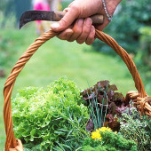

Le Thé des Femmes
L’esprit du thé au coeur de la féminité
Exposition et présence de Myrrha
Sur les deux jourshttp://www.latelierdemyrrha.com/Ateliers et partages avec «Les Femmes à la Source» (Festival du Féminin)
Ateliers de Wu Tao Samedi à 10h30 et 14h20http://www.femininaupaysdelhomme.com/Partages avec Joy Kaivalya
Sur les deux joursPartages avec Joy Kaivalya qui vit auprès de Amma depuis une dizaine d’années, et s’occupe de l’ONG Amrita Serve.Présentation de l’ONG Amrita Serve
Samedi matin 11h40, salle des fêteshttp://amritaserve.org/- 
Plantes sauvages et cycle féminin par Françoise Raso
Départ Samedi matin 10h30 du pôle du Thé des femmesCette balade vous invite à découvrir, à reconnaître et à utiliser quelques plantes et arbres sauvages qui permettent d’harmoniser les déséquilibres induits par les fluctuations hormonales du cycle féminin. Plantes sauvages medicinales et comestibles par Françoise Raso
Départ Samedi 14h30 et Dimanche 15h du pôle Thé des FemmesCette balade vous invite à faire connaissance avec les plantes sauvages qui parsèment nos prés et nos bois. Découvrez leurs étonnantes vertus, la manière de les cueillir et de les préparer afin de soigner quelques maux communs et de croquer quelques mets étonnants.